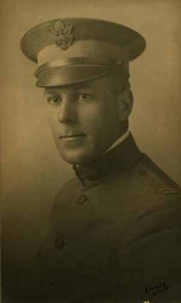
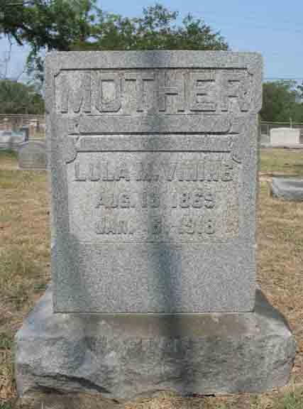

Documentation for William Lincoln Vining - Lula Worth Morgan
Thank you to Linda Newbrough for her contributions to this page.
Family Data

Morgan Fisher Vining, after serving in the Military, was Associate Director of the Extension Division of the University of North Carolina in Chapel Hill. He married Elizabeth Gray in 1929, and the marriage ended in 1933 with Morgan's death in New York City in an automobile accident, in which Elizabeth was severely injured.
Found online (9/4/10) at University of Texas - Austin, u-e-yearbook.com, Cactus Yearbook (Austin, Texas), Class of 1909:
Morgan Fisher Vining, B. A., Austin, Texas.
Athenajum;
Champion in Doubles in Novice Tennis, '07;
Varsity Basketball Team. '06–'07;
Captain Basketball Team, '0S–'09;
Captain Class Football Team. '08–'09;
Varsity Second Football Team. '08.
The following notes taken from Elizabeth Gray Vining's Book Quiet Pilgrimage (second printing 1970, Lippincott)...includes slices from her early years, as well as the early years of her husband, Morgan Fisher Vining.
"Morgan had grown up in Austin, gone to the University of Texas, where he won his letters in football, basketball and track and left his photograph in the gymnasium among the aristocracy of 'three-letter men.' He added LL.B. to his A.B. and after a brief boring period as an attorney had gone to teaching in the University. In April, 1917, two weeks after the United States declared war on Germany, he volunteered in the infantry and after three months at training camp was commissioned captain the the 40th, or Sunshine, Division.
"Most of the next year he spent at Camp Kearney, San Diego, as aide-de-camp to Major General Frederick Smith Strong and as Division censor. It was evidently a very good year. Not from anything that Morgan told me but from papers and albums that I found much later, I learned how able and popular the young aide had been.
"'He is diplomat, athlete, friend to newspaper correspondents and society man,' wrote the Los Angeles Graphic. 'Above all else he is a soldier...'.
"Late in July, 1918, the Sunshine Division was sent overseas. In the four days he spent in London, quartered at the Ritz, Morgan lost his heart to London as he never did to Paris in the longer stay there. In October, finding his pleasant life behind the lines too tame, he applied for more active duty and was sent to the Army School of the Line at Langres for a three-month course. Before it was completed the Armistice had been signed, but even before that Morgan had been stricken with a baffling and long-lasting form of gastritis. He was in army hospitals at Langres, Bordeaux, Cannes and Hyeres, and after he returned to the United States with the 40th Division in February, 1919, he was in the hospital at Camp Kearney, from which he was discharged in May. He went home to Texas barely in time for the death of his beautiful and tender mother, whom he adored. During the following years his search for health and congenial work in a mild climate brought him to Chapel Hill in 1925 as Associate Director of the Extension Division of the University."
Death Data
Gravestone for Lula Worth (Morgan) Vining, in Oakwood Cemetery Annex, Austin, Travis County, Texas (from Find A Grave):
